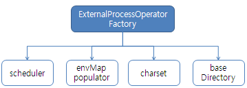

외부 프로세스 실행기 모듈.
ExternalProcessOperatorFactory (외부 프로세스 실행기 생성 팩토리)
베이스 디렉토리, 로그파일 문자셋, 전역 환경 변수, 쓰레드 실행기 등을 세팅하여 외부 프로세스 실행기를 반환한다.

<bean id="externalProcessOperator" class="jcf.extproc.spring.ExternalProcessOperatorFactory"> <property name="charset" value="ms949" /> <property name="environmentSetter" value="ms949" /> <property name="baseDirectory" value="d:/tmp/jobs" /> <property name="taskExecutor" ref="executor" /> </bean>
pre.
charset은 외부 프로세스 실행시 출력 문자셋이 JVM의 기본 문자셋과 다를 수 있으므로 지정.
environmentSetter : 모든 작업에 공통으로 사용할 환경변수를 지정하는 동작.
baseDirectory (기본값은 JVM의 임시 디렉토리)
taskExecutor (또는 executorService) 둘 중에 하나를 지정할 수 있다. (기본값은 풀링 되지 않는 단순 쓰레드 생성 동작임.)
ExternalProcessOperator operator;
CommandLineProcess cmdLineProcess = new CommandLineProcess(JOB_NAME);
cmdLineProcess.getEnvMap().put("url", "jdbc://");
cmdLineProcess.getEnvMap().put("username", "testuser");
cmdLineProcess.getEnvMap().put("password", "testpass");
cmdLineProcess.setWorkDirectory("c:/workspace");
cmdLineProcess.setCommandLine("C:/Program Files/Internet Explorer/iexplore.exe");
cmdLineProcess.setDescription("launch Internet explorer ~♡");
operator.register(cmdLineProcess);
operator.execute(JOB_NAME, null);